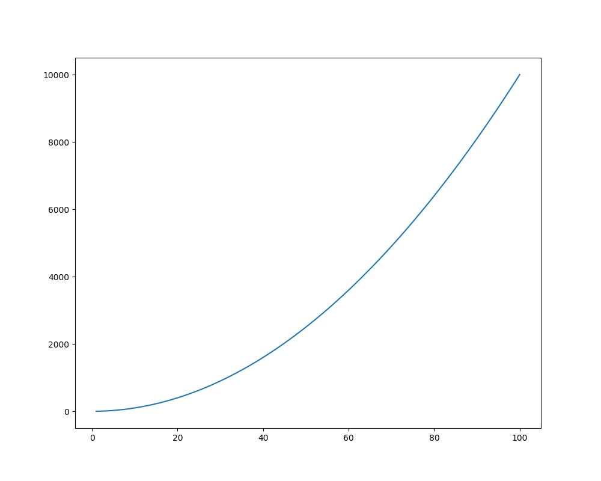

1. はじめに¶
1.1. モジュールのインポート¶
グラフを描画するためには、はじめにmatplotlibのpyplotをインポートする。
import matplotlib.pyplot as plt
また、データの生成やファイルの読み込みでnumpyを使用することが多いので、併せてインポートする。
import numpy as np
# データの生成
x = np.linspace(1, 100, 100)
y = x ** 2
1.2. 描画方法¶
Matplotlibにおけるグラフの描画方法にはPyplotインターフェースとオブジェクト指向インターフェースの2つがある。
1.2.1. Pyplotインターフェース¶
全ての描画設定をpltを用いて行う方法。
# モジュールのインポート
import matplotlib.pyplot as plt
import numpy as np
# データの生成
x = np.linspace(1, 100, 100)
y = x ** 2
# プロットと描画
plt.plot(x, y)
plt.show()
1.2.2. オブジェクト指向インターフェース¶
グラフの階層構造オブジェクトを作成して描画を行う方法。以降はこちらの描画方法を採用する。
# モジュールのインポート
import matplotlib.pyplot as plt
import numpy as np
# データの生成
x = np.linspace(1, 100, 100)
y = x ** 2
# Figureオブジェクトの生成
fig = plt.figure()
# Axesオブジェクトの生成
ax = fig.add_subplot(111)
# プロットと描画
ax.plot(x, y)
plt.show()
